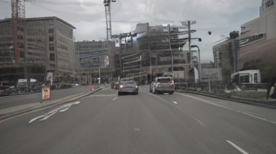

Beyond visual realism
Compare how OpenDWM and DreamForge render the same CAT-K traffic trajectories, camera pose and future frame.


‹ ›
OpenDWMDreamForgeFrom rendering to policy response
These frames illustrate differences in the generated observations. DriveAudit measures their effect on driving by evaluating policies on paired recorded and generated sequences. Evaluation protocol